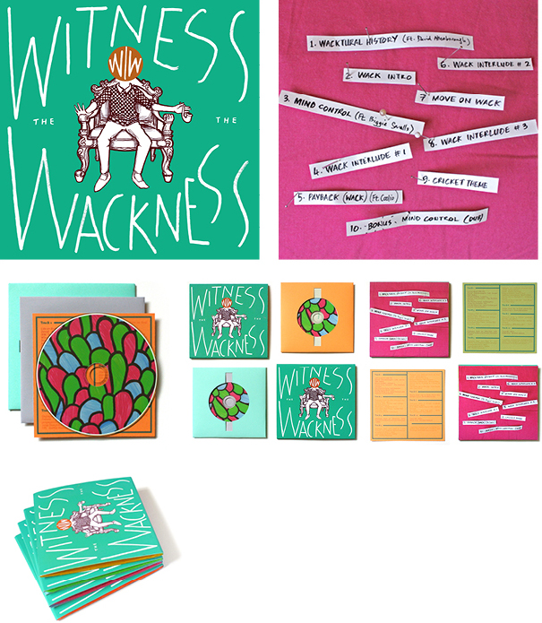

My work includes comics, poster and magazine art, and illustration for packaging. To download a high resolution PDF copy of my portfolio (10.5MB) click here.


|  |
Witness the Wackness
Witness the Wackness is a CD of my own music, produced in limited numbers and intended as an experiment in incorporating illustration into packaging design.
|